你玩他的游戏但你知道他吗？———作者Ray-K的画像
听说过teaching feeling？
还是听说过希尔薇这个名字？
玩过？！找作者？想知道作者吗？看看这里吧~
-------------------------------------------------------------
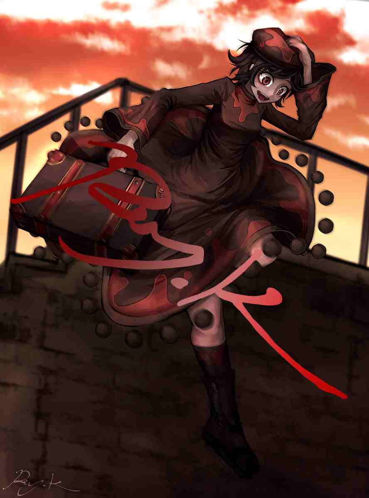
-------------------------------------------------------------
本贴是对teaching feeling作者Ray_kbys的总体介绍，内容包括对其绘画生平的简述、性格取向介绍、创作概况、主要作品teaching feeling简述，以及附加关于盗版问题的情况。
-------------------------------------------------------------
（作者封闭主账号以应对非法搬运及盗版）
-------------------------------------------------------------
（此开放账号最近被停止了，一般人在推上看ray.k的可能没有了）
-------------------------------------------------------------
Ca清（id：T_gas）编辑此贴发布并保持贴子更新
本贴是2023.7.18版
本贴在百度贴吧——teaching_feeling吧首发且保持最新
本贴为所有吧友提供信息支持
转载要求注明来源及编者，编者保留该帖一切权利
---- 作者简介 -------------------------------------------- Ray-K(或Ray_Kbys)，大多以Ray-K(或Ray_Kbys)的身份（昵称）活跃在各社交平台上，他是日本的一名插画家及游戏制作人，男，从2009年开始自学画画，首先接触数字绘画，如今只进行数字绘画，学生时代在美国度过，在美国生活了十年后回到了日本。他的主要对外社交平台为推特，tumblr和nicovideo，绘画作品发布在pixiv，deviantart和nijie上。
---- 作品列表 --------------------------------------------
①Teaching Feeling -傷肌少女との生活-（旧名：奴隷との生活 ~Teaching Feeling~ 常用名：teaching feeling 译名：希尔薇），在售（DLsite、fanza）
②ひと目惚れ(译名：一目钟情)，在售（steam）
③Butterfly Affection ~蠱惑の幼虫~(译名：幼虫)，免费开放
④松尾千鶴着せ替えゲーム、デレマス着せ替えゲーム，两个简单的装扮游戏
在制中：
①Courtship Dream（コートシップドリーム），主要人物：大房静子
②Dressed Passion（ドレスドパッション），主要人物：Aurelia（奥蕾莉亚）
③Cause Curse（カーズカース），主要人物：ノクシア（Noxia）
④ReJigging（リジギング）
---- 转述作者自评 ----------------------------------------
他欣赏「畸形和缺陷」的美，喜欢「不对称」的设计，喜欢「疤痕，穿孔和呕吐」的艺术对比，在其艺术作品，人物设计，故事构成中，「两个元素之间的强烈对比」有重要地位，通过把巨大的落差混合在一起以“深刻地描述丑陋和美丽”，同时“在逆境中生存的坚强精神”和“处在不利地位的弱者精神”很吸引他，他的性好感也与前面的内容挂钩，同时厌恶过于令人不适的癖好。他的绘画技术绝伦，油画技法独具一格，光影效果高超，色彩大胆极为优秀，对于人物立绘有独特风格，且技术极其精湛。
---- 附加内容 -------------------------------------------- 一、部分只是稍微了解他的人根据他的作品可能认为他不太正常，但事实上从他的艺术作品可以看出那出于他的独特喜好的追求，我反复地查证，最终认定他是一位完全正常的优秀的艺术家，我尊重并欣赏他的主张。 二、此外，自他的Teaching Feeling在2015年10月27日发布即大卖以后，至今在dlsite(fanze/ddm不计入)累计售出113088份，至今仍是各榜榜首(一榜有两个免费的游戏排在它之前，我排除了它们)，创造了最高282,720,000日元（以游戏中间价格2500日元计算，约一千四百六十万人民币）最低214,867,200日元（以游戏最低价格1900日元计算，约一千一百一十五万人民币）的流水。按dlsite标准扣除服务费以及日本税费后，作者累计获利应该在166,565,536日元（约八百六十万人民币）到115,035,040日元（约六百万人民币）之间，或许因为种种原因还得再扣除一些，但不可质疑的是这的确是一大笔钱。》》》数据更新于2023.7.18 三、作者关于盗版问题的部分发言摘取(原版和网页翻译版)

 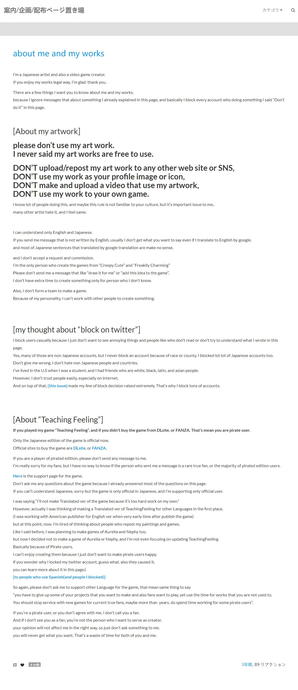
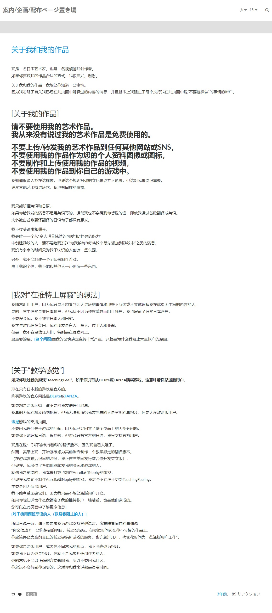
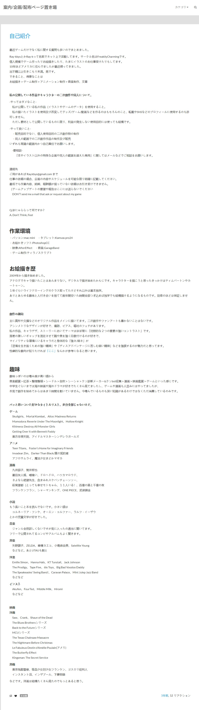
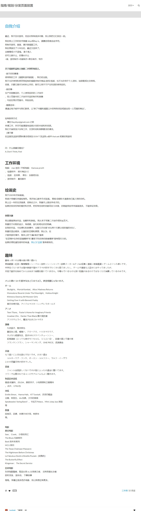
我无法看出他富裕的迹象，仍然像个普通的艺术创作者......截取其中一段："但现在。我厌倦了考虑那些转发我的绘画和游戏的人。就像我之前说的，我本来打算也制作Aurelia和Nephy的游戏，但现在我决定不制作Aurelia或Nephy的游戏，我甚至不专注于更新TeachingFeeling。主要是因为盗版用户。我不能享受创建它们，因为我只是不想让盗版用户开心。如果你想知道为什么我锁定了我的推特帐户，猜猜看，也是他们造成的。"
四、关于盗版问题，作者明确地表示对于自己的艺术作品任何人不得转载，同时封闭了大部分社交帐号（尤其是推特），我对于作者的主张完全支持并拥护，但介于本吧讨论圈子的存在，在事实上无法执行，但我呼吁所有吧友应当自行先考虑过，并进行相对合理有限的处理。》》》本贴作者作品经过二次水印及大幅压缩。
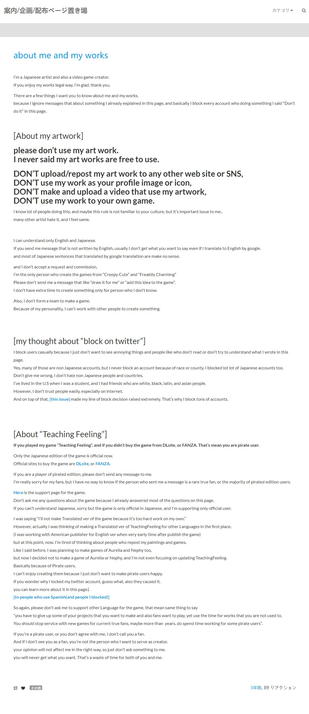
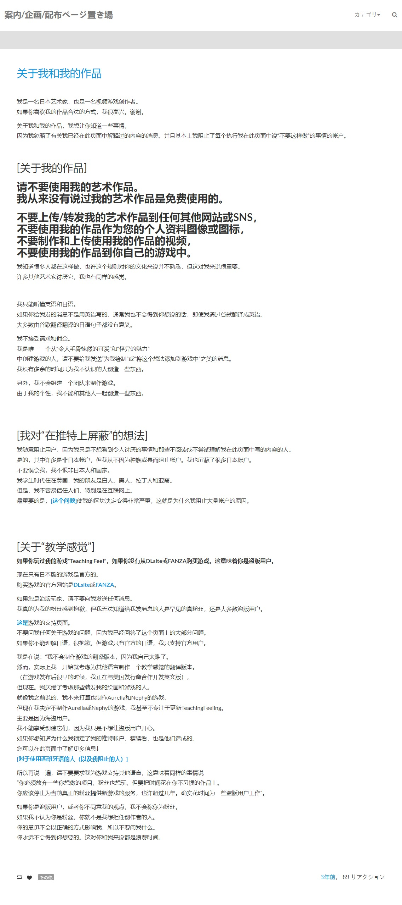
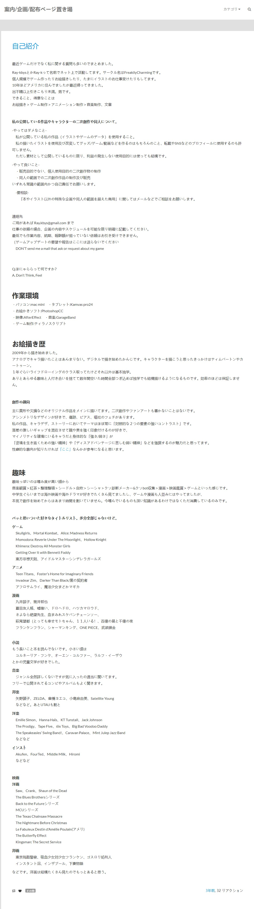
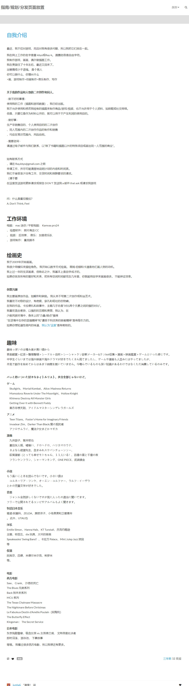
我无法看出他富裕的迹象，仍然像个普通的艺术创作者......截取其中一段："但现在。我厌倦了考虑那些转发我的绘画和游戏的人。就像我之前说的，我本来打算也制作Aurelia和Nephy的游戏，但现在我决定不制作Aurelia或Nephy的游戏，我甚至不专注于更新TeachingFeeling。主要是因为盗版用户。我不能享受创建它们，因为我只是不想让盗版用户开心。如果你想知道为什么我锁定了我的推特帐户，猜猜看，也是他们造成的。"
四、关于盗版问题，作者明确地表示对于自己的艺术作品任何人不得转载，同时封闭了大部分社交帐号（尤其是推特），我对于作者的主张完全支持并拥护，但介于本吧讨论圈子的存在，在事实上无法执行，但我呼吁所有吧友应当自行先考虑过，并进行相对合理有限的处理。》》》本贴作者作品经过二次水印及大幅压缩。
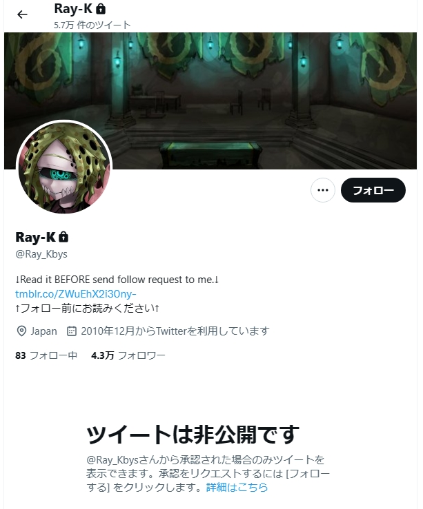
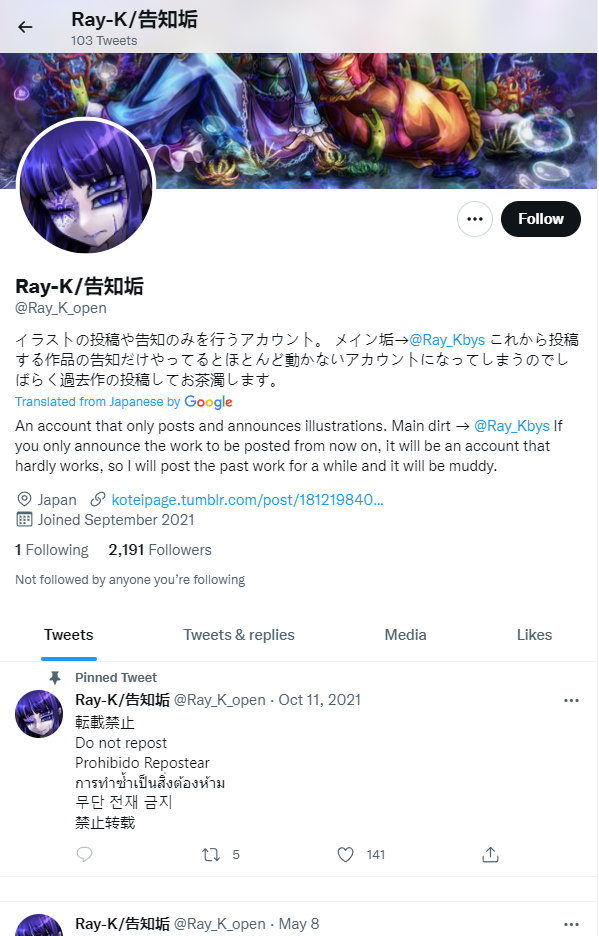
---- 作者简介 -------------------------------------------- Ray-K(或Ray_Kbys)，大多以Ray-K(或Ray_Kbys)的身份（昵称）活跃在各社交平台上，他是日本的一名插画家及游戏制作人，男，从2009年开始自学画画，首先接触数字绘画，如今只进行数字绘画，学生时代在美国度过，在美国生活了十年后回到了日本。他的主要对外社交平台为推特，tumblr和nicovideo，绘画作品发布在pixiv，deviantart和nijie上。
作者社交账户 作者社交账户
---- 附加内容 -------------------------------------------- 一、部分只是稍微了解他的人根据他的作品可能认为他不太正常，但事实上从他的艺术作品可以看出那出于他的独特喜好的追求，我反复地查证，最终认定他是一位完全正常的优秀的艺术家，我尊重并欣赏他的主张。 二、此外，自他的Teaching Feeling在2015年10月27日发布即大卖以后，至今在dlsite(fanze/ddm不计入)累计售出113088份，至今仍是各榜榜首(一榜有两个免费的游戏排在它之前，我排除了它们)，创造了最高282,720,000日元（以游戏中间价格2500日元计算，约一千四百六十万人民币）最低214,867,200日元（以游戏最低价格1900日元计算，约一千一百一十五万人民币）的流水。按dlsite标准扣除服务费以及日本税费后，作者累计获利应该在166,565,536日元（约八百六十万人民币）到115,035,040日元（约六百万人民币）之间，或许因为种种原因还得再扣除一些，但不可质疑的是这的确是一大笔钱。》》》数据更新于2023.7.18 三、作者关于盗版问题的部分发言摘取(原版和网页翻译版)
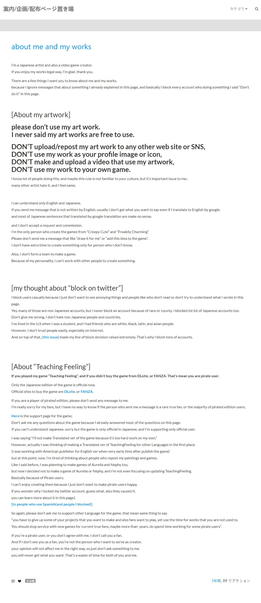
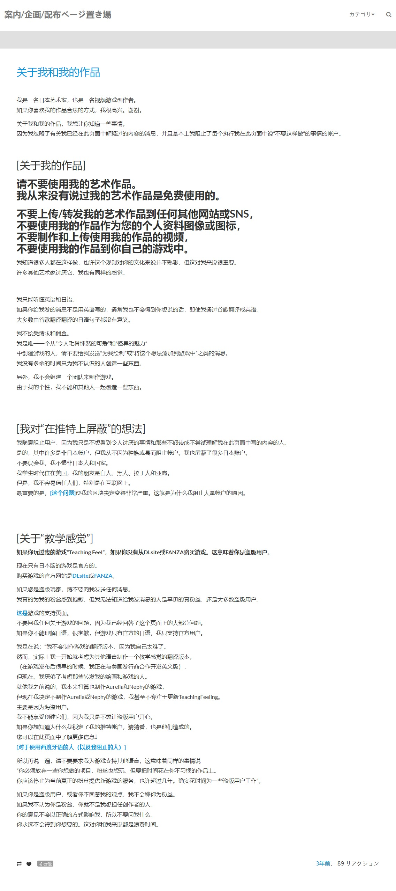
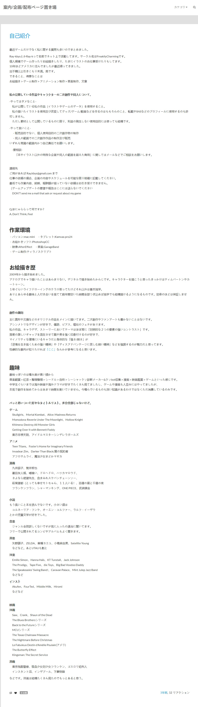
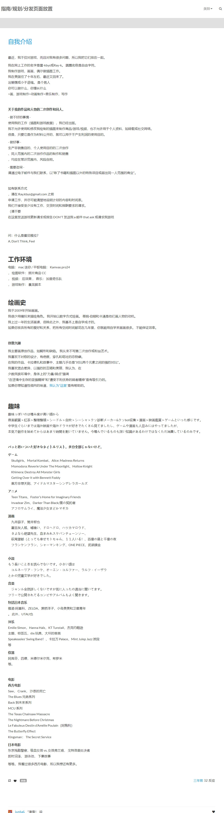
本贴是2023.7.18版，历史版（累计有阅读数：1.4w、点赞数：417、回复数108）：2022.12.31版（累计有阅读数：6472、点赞数：222、回复数48），2022.5.22版（累计有阅读数：7180、点赞数：195、回复数60）